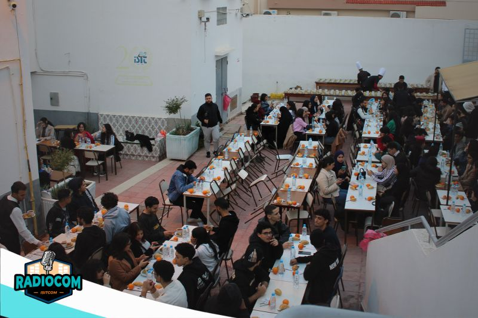

Campus
Campus
Un cadre de vie agréable
Des espaces verts, une cafétéria, une bibliothèque et des salles de détente pour un équilibre entre études et vie étudiante.
Situé à Hammam Sousse, le campus de l'ISITCOM offre un environnement d'apprentissage stimulant : laboratoires équipés, espaces de travail collaboratif et une vie associative dynamique.
Campus
Des espaces verts, une cafétéria, une bibliothèque et des salles de détente pour un équilibre entre études et vie étudiante.

LaboratoiresSalles dédiées à l'IoT, la cybersécurité, les réseaux, le multimédia et l'électronique embarquée avec du matériel professionnel.
Tout ce dont vous avez besoin pour réussir votre parcours universitaire.
Accès internet haut débit partout sur le campus, dans les amphis, les labs et les espaces communs.
Une bibliothèque bien fournie avec des ouvrages techniques, des journaux scientifiques et un accès aux bases de données en ligne.
Un service d'orientation et d'insertion professionnelle pour aider les étudiants dans leur parcours et leur recherche de stage.
Rejoignez l'un de nos clubs et développez vos compétences au-delà des cours.
La vie associative est un pilier de l'expérience universitaire à l'ISITCOM.
Les clubs sont un espace privilégié pour rencontrer des étudiants de toutes les filières et construire un réseau professionnel dès la première année.
Hackathons, ateliers techniques, projets collaboratifs — les clubs sont le lieu où la théorie se transforme en réalisations concrètes.
Participez à des compétitions nationales et internationales en robotique, programmation, design et télécommunications.